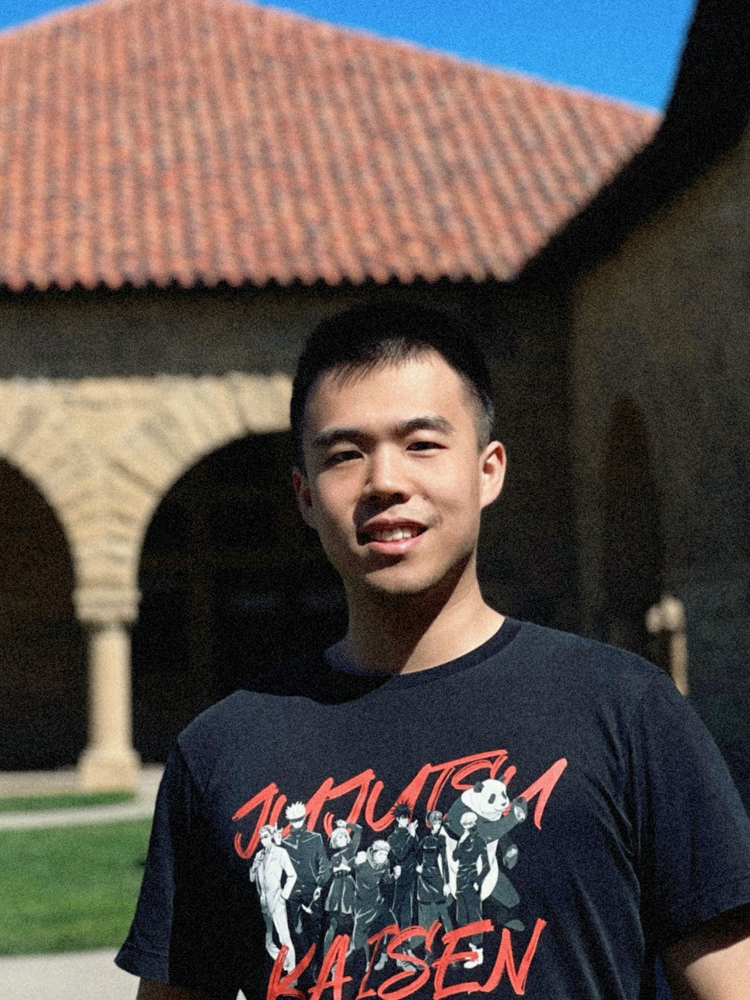

Wilson (Yanchen) Wang
Research Staff Assistant, Columbia University CTN
Email: ppwang (at) stanford.edu
Office: Somewhere on Earth
Biography
[more]
My name is Wilson (Yanchen) Wang.
I'm currently working as a research staff assistant at Columbia University Center for Theoretical Neuroscience (CTN),
where I was advised by Prof. Liam Paninski.
I also worked as a research data analyst at Stanford University with Prof. Ehsan Adeli and Prof. Feng Vankee Lin
on AI, brain and cognitive science. I recieved my bachelor's degree in Computer Science from the
University of Rochester, where I was advised by Prof. Christopher Kanan and worked on continual learning.
My research interests lie in computational neuroscience and computational cognitive science as I am passionate about understanding the inner workings of the brain.
My ultimate dream is to create a FullDive machine like a science fiction: Sword Art Online
(SAO)
.
SAO
"Sword Art Online" is a light novel series written by Reki Kawahara. "Full Dive" is a central concept in "Sword Art Online," representing a fully immersive virtual reality experience. In this advanced VR system, players connect through nerve gear technology ( Computer Interface) that stimulates the brain, allowing for sensory experiences and interactions that feel as real as the physical world.
Research
(* indicates equal contribution, highlight indicates representative papers)
![[WAVE]](assets/wave/teaser.webp)
@InProceedings{Wang_2024_arXiv,
author = {Wang, Yanchen and Turnbull, Adam and Xiang, Tiange and Xu, Yunlong and Sa, Zhou and Masoud, Adnan and Azizi, Shekoofeh and Lin Vankee Feng and Adeli, Ehsan},
title = {Decoding Visual Experience and Mapping Semantics through Whole-Brain Analysis Using fMRI Foundation Models},
booktitle = {arXiv},
month = {August},
year = {2024},
url = {tbd}
}
![[MTM]](assets/mtm/teaser.webp)
@InProceedings{Zhang_2024_arXiv,
author = {Zhang, Yizi and Wang, Yanchen and Benetó, Donato Jiménez and Wang, Zixuan and Azabou, Mehdi and Richards, Blake and Winter, Olivier and The International Brain Laboratory and Dyer, Eva and Paninski, Liam and Hurwitz, Cole},
title = {Towards a “universal translator” for neural dynamics at single-cell, single-spike resolution},
booktitle = {arXiv},
month = {July},
year = {2024},
url = {http://arxiv.org/abs/2407.14668}
}
![[MMA]](assets/mma/teaser.webp)
@inproceedings{yang2024mma,
title={MMA: Multi-Modal Adapter for Vision-Language Models},
author={Yang, Lingxiao and Zhang, Ru-Yuan and Wang, Yanchen and Xie, Xiaohua},
booktitle={Proceedings of the IEEE/CVF Conference on Computer Vision and Pattern Recognition},
pages={23826--23837},
year={2024}
}
@article{wang2024vision,
title={Vision-based estimation of fatigue and engagement in cognitive training sessions},
author={Wang, Yanchen and Turnbull, Adam and Xu, Yunlong and Heffner, Kathi and Lin, Feng Vankee and Adeli, Ehsan},
journal={Artificial Intelligence in Medicine},
volume={154},
pages={102923},
year={2024},
publisher={Elsevier}
}
Education
Experience
Research Staff Assistant | Advisors:
Prof. Liam Paninski
2024 - Present
New York, US
Research Data Analyst | Advisor: Prof. Ehsan Adeli
and Prof. Feng Vankee Lin
2023 - 2024
Stanford, US
Research Summer Intern | Advisors:
Prof. Ru-Yuan Zhang
2023 Summer
Shanghai, China
Research Assistant | Advisors:
Prof. Christopher Kanan
2022 - 2023
Rochester, US